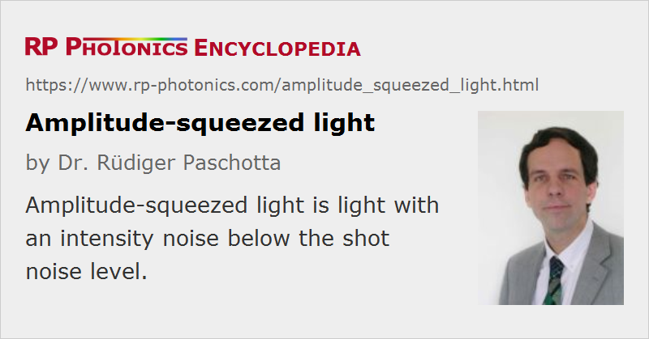

Amplitude-squeezed Light
Definition: light with an intensity noise below the shot noise level
More general term: squeezed states of light
German: amplitudengequetschtes licht
How to cite the article; suggest additional literature
Author: Dr. Rüdiger Paschotta
Amplitude-squeezed light is light with an intensity noise level below the shot noise level, i.e. below the standard quantum limit. This reduced intensity noise can be obtained only at the expense of increased phase noise. In a phase space representation (see Figure 1), the uncertainty region becomes squeezed in the sense that it becomes narrower in the amplitude direction and wider in the phase direction. This is one form of squeezed states of light.
Amplitude-squeezed light can be generated in different ways. One possibility is to drive a laser diode with a very quiet electric current [4, 7], and typically also to operate it at a very low temperature. In other cases, optical nonlinearities are exploited. For example, amplitude-squeezed light can be generated in a doubly resonant [5, 6] or singly resonant [8] frequency doubler.
Questions and Comments from Users
Here you can submit questions and comments. As far as they get accepted by the author, they will appear above this paragraph together with the author’s answer. The author will decide on acceptance based on certain criteria. Essentially, the issue must be of sufficiently broad interest.
Please do not enter personal data here; we would otherwise delete it soon. (See also our privacy declaration.) If you wish to receive personal feedback or consultancy from the author, please contact him e.g. via e-mail.
By submitting the information, you give your consent to the potential publication of your inputs on our website according to our rules. (If you later retract your consent, we will delete those inputs.) As your inputs are first reviewed by the author, they may be published with some delay.
Bibliography
| [1] | D. Walls, “Squeezed states of light”, Nature 306, 141 (1983), doi:10.1038/306141a0 |
| [2] | Y. Yamamoto et al., “Amplitude squeezing in a pump-noise-suppressed laser oscillator”, Phys. Rev. A 34 (5), 4025 (1986), doi:10.1103/PhysRevA.34.4025 |
| [3] | H. J. Kimble and D. Walls (eds.), Special Issue on squeezed light, J. Opt. Soc. Am B 4 (10) (1987) |
| [4] | S. Machida et al., “Observation of amplitude squeezing in a constant-current-driven semiconductor laser”, Phys. Rev. Lett. 58 (10), 1000 (1987), doi:10.1103/PhysRevLett.58.1000 |
| [5] | S. F. Pereira et al., “Generation of squeezed light by intracavity frequency doubling”, Phys. Rev. A 38 (9), 4931 (1988), doi:10.1103/PhysRevA.38.4931 |
| [6] | A. Sizmann et al., “Observation of amplitude squeezing of the up-converted mode in second harmonic generation”, Opt. Commun. 80 (2), 138 (1990), doi:10.1016/0030-4018(90)90375-4 |
| [7] | W. H. Richardson et al., “Squeezed photon-number noise and sub-Poissonian electrical partition noise in a semiconductor laser”, Phys. Rev. Lett. 66 (22), 2867 (1991), doi:10.1103/PhysRevLett.66.2867 |
| [8] | R. Paschotta et al., “Bright squeezed light from a singly-resonant frequency doubler”, Phys. Rev. Lett. 72 (24), 3807 (1994), doi:10.1103/PhysRevLett.72.3807 |
See also: squeezed states of light, shot noise, standard quantum limit
and other articles in the category quantum optics
|  |
If you like this page, please share the link with your friends and colleagues, e.g. via social media:
These sharing buttons are implemented in a privacy-friendly way!